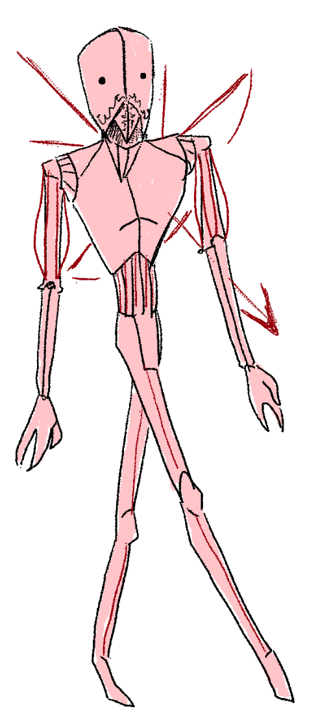

There is nothing worse than being heartless. Having a well-developed database just to be shortchanged on all the things that matter. But if I were to tell you one thing about robots - if someone needs to be hurt, they are the ones to do the dirty bidding.
Unlike their mechanical brothers they are a bit more flexible in terms of occupation choice - modify or replace a detail, then reprogram, and you get a new unit.
Each have a pod, shaped like a casket, for a living arrangement and consume copious amounts of energy to operate. Regretablly so, they do have a purpose - consuming knowledge, digesting it and generationg more based on what they ate.
Once you feed a human enough of the slop they hand out, they are nothing short of lobotomized - and they say my methods...!
Regardless. Robots are also widely used for calculations, menial labour and for upkeeping peace amongst humans. Ninety percent of them will never witness Michael in their lives - and with his striving for constant optimization cuts, it's a blessing to escape his eye.